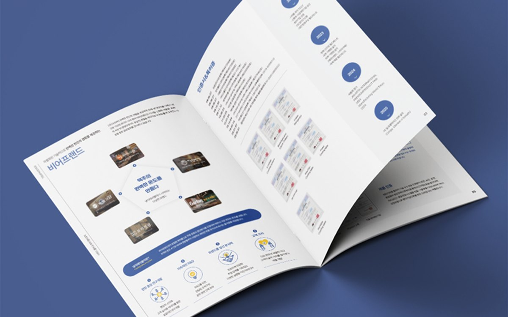
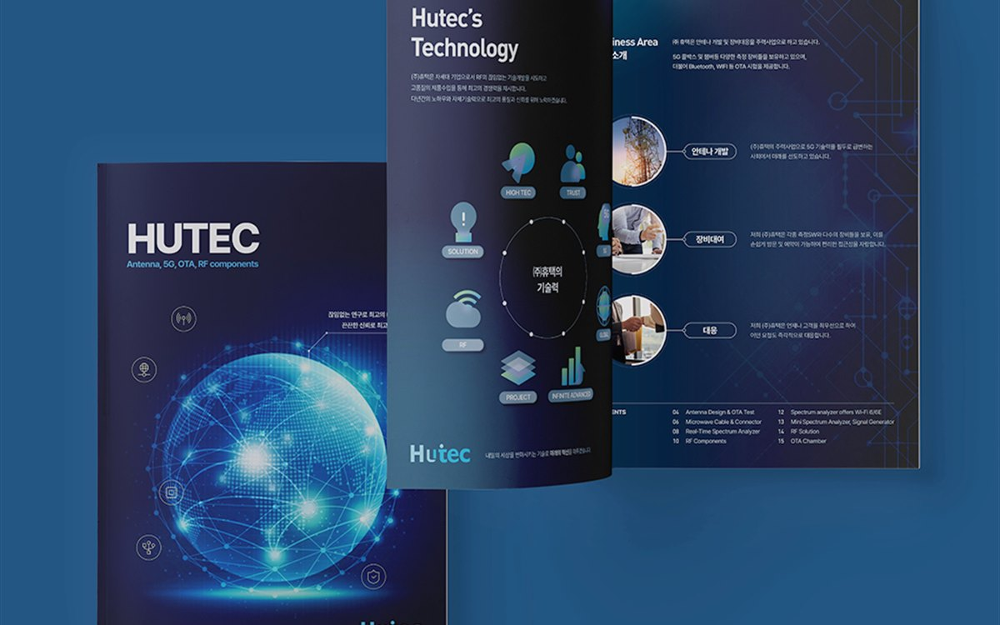
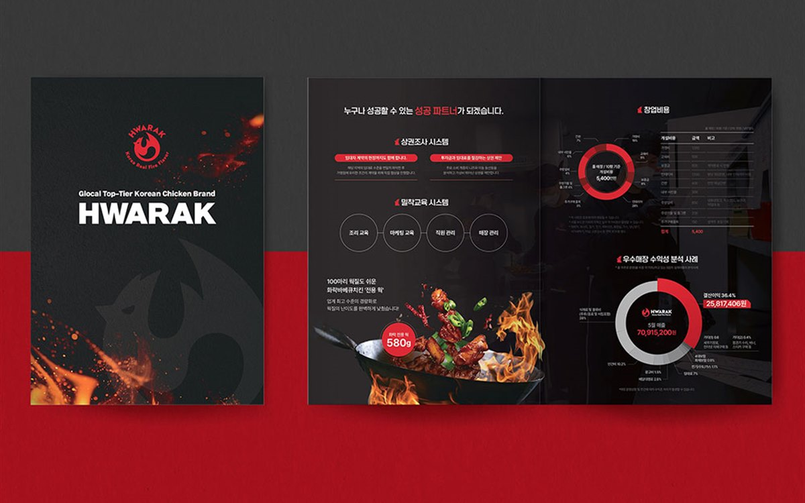
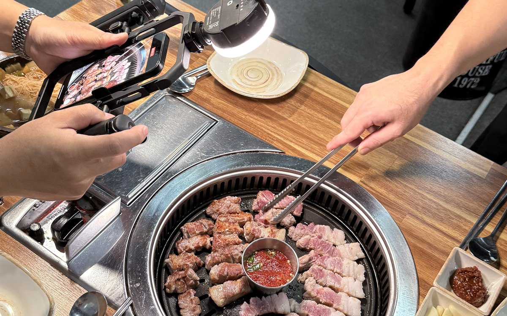

인쇄·홍보물
인쇄·홍보물대덕연구단지 연구성과집 디자인·인쇄, 어디에 맡겨야 할까?
연구성과집은 과제 목록이 아니라 성과의 의미부터 보여줘야 읽힙니다. 발간등록번호·CI 규정 체크, 표와 그래프 편집 방법, 연말 발간 일정을 대덕연구단지 기관 담당자 기준으로 정리했습니다.
7분 분량대전 · 세종 · 충청권 방문 미팅평일 09:00 ~ 18:00
칼럼
연구성과집 · 카탈로그 · 제안서 · 포스터 · 소식지. 대전 연구기관과 기업 담당자가 제작을 맡기기 전에 정리해 두면 좋은 실무 기준을 상담 사례 기준으로 씁니다.
12편 · 대전지사 기획자가 상담 자리에서 받은 질문으로 씁니다
인쇄·홍보물연구성과집은 과제 목록이 아니라 성과의 의미부터 보여줘야 읽힙니다. 발간등록번호·CI 규정 체크, 표와 그래프 편집 방법, 연말 발간 일정을 대덕연구단지 기관 담당자 기준으로 정리했습니다.
7분 분량 디자인 일반
디자인 일반입찰 제안서는 평가표 배점 순서로 목차를 짜야 점수가 나옵니다. 평가위원이 10분 안에 읽는 제안서의 구조, 도식으로 바꿔야 하는 페이지, 제출본 인쇄 규격을 대전 기관 입찰 기준으로 정리했습니다.
7분 분량 인쇄·홍보물
인쇄·홍보물해외 학회·전시회용 영문 카탈로그는 번역보다 레이아웃 재설계가 관건입니다. 국문판과 영문판을 같은 일정으로 만드는 순서, 용어 통일 방법, 수출바우처 활용 기준을 대덕테크노밸리 바이오 기업 기준으로 정리했습니다.
6분 분량 인쇄·홍보물
인쇄·홍보물학회 포스터는 심사위원이 1m 앞에서 읽는 조건으로 글자 크기를 정해야 합니다. A0·A1 규격 확인, 연구 내용을 한 장에 정리하는 구성, 대형 출력 마감 기준을 대전 대학·연구기관 발표자 기준으로 정리했습니다.
6분 분량 인쇄·홍보물
인쇄·홍보물병원 리플렛은 불특정 다수에게 배포하는 순간 의료광고가 됩니다. 사전심의 대상 여부 확인, 쓸 수 없는 표현, 진료 안내 리플렛의 면 구성과 인쇄 기준을 대전 유성구·둔산동 병원 개원 준비 기준으로 정리했습니다.
7분 분량 인쇄·홍보물
인쇄·홍보물학원 홍보물 인쇄비는 수량이 아니라 판형·도수·용지·일정에서 갈립니다. 규격 판형 선택, 색상 수 조절, 용지 등급, 성수기 전 발주 기준을 둔산동·노은동 학원가 기준으로 정리했습니다.
6분 분량 인쇄·홍보물
인쇄·홍보물오래된 제품 카탈로그는 새로 찍는 것보다 사양표 구조를 다시 짜는 것이 먼저입니다. 유지할 것과 버릴 것을 나누는 기준, 단종·신제품 정리, 사진 재촬영 범위, 리뉴얼 일정을 대덕산단·문평동 제조기업 기준으로 정리했습니다.
7분 분량 인쇄·홍보물
인쇄·홍보물월간·분기 소식지와 연간 백서는 준비 순서가 다릅니다. 호별 템플릿 설계, 원고 수합 양식, 발간등록번호·ISBN 처리, 중철·무선 제본 선택 기준을 정부대전청사·세종청사 기관 담당자 기준으로 정리했습니다.
7분 분량
디자인 일반회사소개서 하나로 투자자와 고객을 모두 설득하려다 둘 다 놓치는 경우가 많습니다. IR용과 영업용의 목차 차이, 기술을 비전공자에게 설명하는 도해, 8페이지 기본 구성을 대덕특구 연구소기업·스타트업 기준으로 정리했습니다.
6분 분량
디자인 일반방산·항공우주 기업의 기술 브로슈어는 공개 가능한 범위를 먼저 정해야 합니다. 비밀유지계약, 자료 접근 관리, 시스템 구성도 표현 수위, 전시회용과 제안용 분리 기준을 유성·계룡 인근 기업 기준으로 정리했습니다.
7분 분량
브랜딩·로고로고를 먼저 만들고 간판·메뉴판·포장을 따로 맡기면 색과 비율이 어긋납니다. 로고 규정 3가지, 간판 업체에 넘길 파일 형식, 가맹점 확장을 고려한 브랜드 가이드 기준을 대전 둔산·도안·궁동 상권 기준으로 정리했습니다.
6분 분량
디자인 일반카탈로그용 제품 사진은 지면 구성을 정한 뒤 컷 리스트대로 찍어야 재촬영이 없습니다. 출장 촬영 준비물, 공장·연구시설 촬영 시 확인할 보안·안전 사항, 촬영과 디자인을 한 팀에 맡길 때 줄어드는 일정을 대전·세종·청주 기업 기준으로 정리했습니다.
6분 분량FIRST DESIGN DAEJEON
기획 · 디자인 · 번역 · 촬영 · 인쇄를 한 팀이 진행합니다.
원고가 정리되기 전이라도 목차와 일정부터 함께 잡아 드립니다.